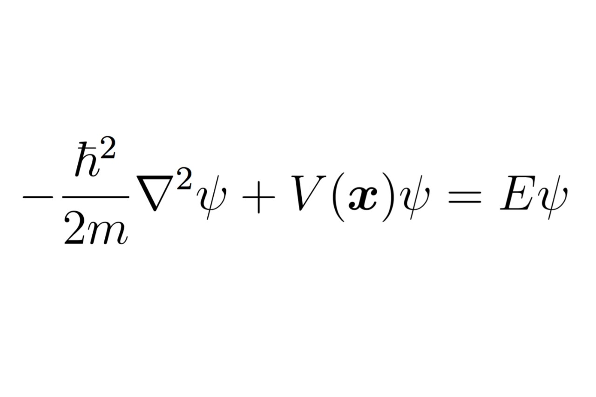
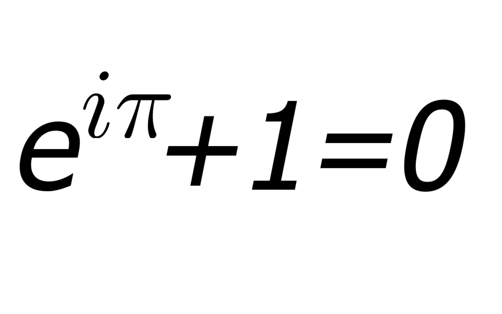

C++ Portfolio
Welcome to my portfolio of C++ projects, where theoretical physics and advanced computational techniques converge to solve complex problems. This collection showcases my proficiency in implementing sophisticated algorithms and numerical methods using an object-oriented programming approach. Each project embodies a unique aspect of computational physics, from simulating fundamental physical phenomena to solving intricate mathematical equations. Don't hesitate to contact me about any of the below projects. I'm contactable at My LinkedIn, or my email sheehanconor67@gmail.com.
I'm currently in Australia on a 417 Working Visa seeking employment, see the below button for my resumé, or if you've time to spare, my MSc on Machine Learning applied to Manufacturing Data.
Each project in this portfolio is a testament to my ability to translate complex theoretical concepts into practical, efficient, and well-structured code. Through these works, I aim to demonstrate not only my technical skills but also my passion for exploring the frontiers of computational physics.
This project delves into the statistical mechanics of ferromagnetic materials using the Metropolis algorithm. It simulates the 2D Ising model on a 15x15 lattice, exploring the behavior of physical observables as functions of temperature, and provides insights into phase transitions and critical phenomena.
Here, I apply Monte Carlo methods to a classic quantum mechanical problem, calculating energy levels and expectation values for a particle confined in a one-dimensional potential well. This project combines the elegance of quantum theory with the power of stochastic techniques.

This project focuses on solving differential equations and analyzing perturbative systems, such as the QHO and Double Well Potential. The finite difference method provides numerical solutions to differential equations, while perturbation theory offers approximate solutions to problems that cannot be solved exactly. First-Order Perterbation theory is applied to the QHO, to analyse the affect of a Quartic Perturbation on two different Eigenstates
By leveraging the variational principle and gradient descent optimization, this project finds approximate solutions to quantum mechanical problems. It exemplifies the use of optimization algorithms in physics to minimize energy functionals and determine ground state properties.
In this project we implement a series of different recursive solutions for various mathematical problems, analyse their runtime and memory complexity and discuss. This project involves both C++ & Python.
Implemented using object-oriented principles, this project showcases the bisection method for finding roots of nonlinear equations. It highlights the robustness and simplicity of this numerical technique in solving mathematical problems.

This project employs the Euler method for solving ordinary differential equations, demonstrating its application and efficiency in numerical analysis. The object-oriented implementation ensures modularity and reusability.
Here, I implement Simpson's method for numerical integration, a powerful technique for approximating definite integrals. The project emphasizes the accuracy and convergence properties of this method.
This project presents the Newton-Raphson method for finding successively better approximations to the roots of a real-valued function. The object-oriented design facilitates the extension and customization of this iterative approach.